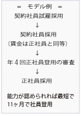

計器サービス事業部 工事部 計器工事グループ 》事業部紹介はこちら 未経験歓迎/研修制度充実/夜勤なし/直近5年間の正社員登用実績100%
| 募集職種と人員 | 低圧電力量計取替工事 25名 | |
|---|---|---|
| 契約開始時期 | 2026年7月、8月、10月、12月の1日から採用契約。 入社日は相談応じます。（契約期間は備考欄参照） |
|
| 仕事の内容 | 関西電力送配電㈱から委託を受けた低圧電力量計取替工事単独作業をする仕事です。 一般住宅や店舗などのお客さまに工事内容を簡単に説明し取替工事をして頂きます。 》電気メーターの取替工事について 》仕事の説明 ほとんどの方が未経験でスタートしています。 |
|
| 1日の流れ | ・8:30 | 朝礼後、資材を車両に積んで工事所を出発。お客さまを訪問し、電気メーターの取替工事の内容などを説明し、新しい電気メーターに取り替えます。1日の作業件数は20件程です。「○丁目」単位などでエリアが割り当てられ、1人でお客さま先をまわるため、ルートを自由に決められ、効率よくまわることができます。 |
| ・14:30頃 | 翌日以降の工事エリアにて工事ビラによる周知作業 | |
| ・16:00頃 | 1日の現場が完了すると、工事所に戻り事務処理と翌日の準備をして17:10の定時に退社がスタンダードです。（平日の時間外は8h/月程度。受注量が多いときは、主に土曜出勤で調整しています） | |
| 必要な資格 | 普通自動車免許（必須）AT可 電気工事士資格をお持ちの方歓迎 |
|
| 賃金形態 | 本給 191,600円 ≪参考≫月収例入社後1年以上40万円（諸手当含む） 能力給（施工）：施工能率と月間施工総数により加算、0円～最大253,000円（社員平均99千円/月） 能力給（安全）：安全・品質の貢献により加算（20千円/月） その他作業手当（平均10千円／月）加算支給制度あり 夏季：１日2本の飲料を支給（7月～9月） 扶養手当（扶養する子の人数×5.5千円） 報奨給(組織貢献度給)制度あり(平均25千円加算)、入社後13ヶ月目から支給対象・翌月払い 賞与なし、通勤交通費全額支給 マイカー通勤不可 |
|
| 年収例 | 420万円／契約社員・経験1年・20代／本給+能力給(施工)+能力給(安全)+手当
680万円／正社員・経験2年・30代／本給+能力給(施工)+能力給(安全)+報奨給+手当+賞与 790万円／正社員・経験4年・20代／本給+能力給(施工)+能力給(安全)+報奨給+手当+賞与：年2回 |
|
| 就業時間 | 始業 8時30分 終業 17時10分 休憩1時間 | |
| 試雇期間 | 2ヶ月、本給187,200円 | |
| 教育スケジュール | 試雇採用～ 4日 |
・計器取替工事に関する知識および、お客さま対応について（机上） 電気理論も理解できるように丁寧にお教えします。わからないことなどがあれば、個別対応も実施しますのでご安心ください。 |
| 5日～30日 | ・当社尼崎技術訓練センターにて模擬設備での実技訓練 ・現場見学 ・工事所仮配属の実技テスト、他と比べて技術の習得が遅いと感じても、焦らず時間をかけて習得すれば大丈夫です。 | |
| 2ヵ月目～ 試雇期間満了 | ・工事所配属、指導者と同エリア内での同行指導～単独作業 ※単独作業を安心して任せられるようになるまで、教育指導を行います。 | |
| 3ヵ月目～ | 研修時の教育担当との面談をします。仕事に慣れたか？困りごとはないか？コミュニケーションを取りながら仕事の悩みや疑問の解消を手助けします。 | |
| 5ヵ月目～ | 同期が集合しフォロー研修を実施します。現場でのできごとや仕事の進め方などの意見交換をする機会があります。 | |
| 勤務地 | 大阪府大阪市、豊中市、寝屋川市、高槻市、堺市、岸和田市、羽曳野市 京都府京都市、兵庫県神戸市、尼崎市、明石市、姫路市、奈良県奈良市、滋賀県大津市 |
|
| 休日 | 日曜、国民の祝日に関する法律で定める休日、土曜日、 年末年始（12/29～1/3）、労働祭（5/1） 年次有給休暇（普通休暇・入社初年度 2日～最大10日入社時期により異なります） 消化しやすい環境で、取得率は90％！ 夏期休暇（3日） ★GWなどは、土日休みと有休を組み合わせて9連休にすることも可能。 年間休日日数124日（2025年度） |
|
| 社会保険 | 厚生年金、関西電力健康保険組合、労災保険、雇用保険 | |
| 福利厚生 | 慶弔金、厚生施設他 | |
| その他 | 各種保険の団体扱い（関電グループの自動車保険、損害保険、生命保険など） ★保険制度は関西電力グループのスケールメリットが得られる割引率の高い保険で、従業員に人気です。（自動車保険31％割引など） 関西電力グループ各種割引（レジャー・住宅・リースetc.） 各種クラブ活動、社内実施健康診断、メンタルヘルス、産業医相談、インフルエンザ予防接種（全額補助） スポーツクラブルネサンス、ホットヨガスタジオLAVAを割引価格で利用することができます。 |
|
| 応募・選考 |
|
|
| 書類提出先 | 〒531-0077 大阪市北区大淀北1丁目6番110号 株式会社エネゲート 計器サービス事業部 工事部 計器工事統括グループ ℡06-6458-9288 担当：五十嵐、守時 |
|
| 備考 |
 |
|
| 募集期限 | 随時受付 | |